교통기사 (2003-03-16 기출문제)
1과목: 교통계획
1. 현재 교통망의 문제지점 또는 지역을 진단하고 도로의 시설, 확장등 교통시설 건설사업의 타당성과 우선순위 등을 결정하는데 가장 중요한 근거가 되는 것은?
- 통행발생량
- 교통수단분담율
- 노선배정교통량
- 교통죤간 통행분포량
(정답률: 73%)

2. OD표에서의 교통량은 주로 tij, tii, Σt로 표시된다. 이 중 tii 교통량은 무엇이라 하는가?
- 발생 교통량
- 집중 교통량
- 지역내 교통량
- 발생, 집중 교통량
(정답률: 73%)
3. 어느 지하철 노선이 차량 10량 편성의 열차가 정차할 수 있는 시설로 건설되었다. 열차의 최소 차두간격(headway)이 3분이고 입석을 포함하여 차량당 400명이 승차할 수 있다고 할 때 이 지하철 노선의 한 시간당 최대 수송용량은 얼마인가?
- 40,000명/시
- 60,000명/시
- 80,000명/시
- 100,000명/시
(정답률: 50%)
4. 버스의 통행비용에 대한 승객수요를 조사한 결과 다음과 같은 수요모형을 도출했다고 한다. 버스의 통행비용가격 탄력성 (직접수요탄력성)은? (단, V=버스의 승객수요(인), P=버스의 통행비용(원))
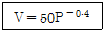
- 0.6
- 0.4
- -0.4
- -0.6
(정답률: 64%)
5. 지방부 도로의 교통량 조사에 관한 설명 중 틀린 것은?
- 상시조사는 년간 일정한 간격으로 측정하되 한번에 연속적으로 통상 7일동안 시간별 교통량을 측정하고 기록한다.
- 상시조사 지점은 숫자가 제한되어 있기 때문에 전국의 모든 도로구간을 이 조사 지점만 가지고 grouping 하기는 불가능하다.
- 전역조사는 AADT를 구하기 위한 기본교통량을 구하는 조사로서 교통량 조사가 필요한 모든 구간에 교통량 측정기기를 설치하여 조사한다.
- 상시조사는 AADT값을 매월의 평일 평균 교통량으로 나누어 월변동계수를 구한다.
(정답률: 알수없음)
6. 버스운영체계에서 공영버스와 민영버스에 관한 설명 중 옳지 않은 것은?
- 승객수요가 많지 않은 지역에 균형된 서비스공급은 공영버스가 좋다.
- 승객의 편리성과 안전성은 민영버스가 좋다.
- 공영버스는 정치적 간섭을 받는다.
- 비용측면에서 공영회사가 민영회사보다 비효율적이다.
(정답률: 84%)
7. 조사대상지역 밖에 출발지 또는 목적지를 가진 통행을 조사하는 것으로 조사대상지역 경계의 주요지점을 조사 지점으로 하여 유입, 유출되는 차량을 면접 조사하는 방법으로 가구 설문조사등 본 조사의 보완으로 활용되는 조사는?
- 스크린 라인(Screen Line) 조사
- 폐쇄선(Cordon Line) 조사
- 차량 번호판 조사
- 노측 면접 조사
(정답률: 90%)
8. 경제성 분석에 사용되는 순현재가치(NPV)가 어떤 조건일 때 공공사업이 수익성이 있게 되는가?
- NPV로는 수익성을 판단할 수 없다.
- NPV ＜ 0
- NPV = 0
- NPV ＞ 0
(정답률: 80%)
9. 다음 통행배분기법 중 유효경로에 대한 배분확률을 구하여 가로에 교통량을 배정하는 방법은?
- All-or Nothing Assignment 방법
- Stochastic Assignment 방법
- Incremental Assignment 방법
- Equilibrium Assignment 방법
(정답률: 알수없음)
10. 중력모형에 의한 통행분포예측시 통행 임피던스(통행저항)의 함수로 사용되지 않는 함수는?
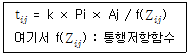
- f(Zij) = Zij-n
- f(Zij) = e(-λZij)
- f(Zij) = e(-λZij)Zij-n
- f(Zij) = -λZij-n e(-λ)
(정답률: 73%)
11. 교통수단별 요금 체계의 변화로 인한 효과를 측정할 수 있는 방법은 다음 중 어느 것인가?
- 공급탄력성
- 수요탄력성
- 요금의 형평성
- 승객의 편리성
(정답률: 70%)
12. 교통계획을 계획기간에 따라 장기교통계획과 단기교통계획으로 구분할 때 다음 설명 중 옳은 것은?
- 장기교통계획은 시설 지향적이고 단기교통계획은 서비스 지향적이다.
- 장기교통계획은 서로 다른 대안이고 단기교통계획은 유사한 대안이다.
- 장기교통계획은 저자본 비용이고 단기교통계획은 자본 집약적이다.
- 장기교통계획은 많은 교통수단을 동시 고려하고 단기교통계획은 단일교통 수단 위주이다.
(정답률: 91%)
13. 평면 교차로에서 도류화의 목적은?
- 교차로에서 dilemma zone을 없애기 위하여
- 신호주기를 적정화 시키기 위하여
- 교차로에서 차량의 속도를 감소시키기 위하여
- 교차로에서 상충점을 가능한한 분리하기 위하여
(정답률: 86%)
14. 통행발생(trip generation) 모형으로서 가장 널리 사용되는 방법은 어느 것인가?
- 카테고리법
- 분류분석
- 로짓트모형
- 프로빗트모형
(정답률: 84%)
15. 다음의 교통요금 구조중 장거리 승객에 비해 단거리 승객의 비용부담이 많으며 도시확산을 간접적으로 유도할 수 있는 등의 단점을 가지고 있는 요금구조는?
- 균일요금제
- 거리요금제
- 거리비례제
- 구간요금제
(정답률: 91%)
16. 도로투자사업의 경제성 평가과정에서 고려되는 편익이 아닌 것은?
- 통행비용의 절감
- 통행시간의 절약
- 통행료 수입
- 주변지역개발 효과
(정답률: 30%)
17. TSM(Transportation Systems Management)기법에서 교통수요를 억제시키는 방법으로 적합치 않은 것은?
- 버스전용차로 설치
- 노상주차제한
- 출퇴근 시간대 조정
- 자동차 통행 제한구역 설치
(정답률: 42%)
18. 통행분포 모형 중 성장율법(growth factor model)에 포함되지 않는 것은?
- 균일성장율법
- 프라타법
- 퍼네스법
- 중력모델
(정답률: 67%)
19. 조사 및 연구대상지역의 범위를 나타내는 선을 폐쇄선 혹은 경계선(cordon line)이라고 하는데 이러한 폐쇄선을 선정할 때 고려하여야 할 사항이 아닌 것은?
- 폐쇄선을 횡단하는 도로는 가능한 적게한다.
- 가능한 넓은 지역이 포함되도록 한다.
- 행정구역의 경계선과 가능한 일치시킨다.
- 대규모 주거지역은 될수록 경계선 안에 포함시킨다.
(정답률: 85%)
20. 통행분포(trip distribution)모형의 유형별 특성으로 맞지 않는 것은?
- 성장인자법 : 존간 통행비용을 고려하지 않음
- 중력모형 : 존별 통행유입량과 유출량을 만족시키며 통행비용을 최대화하는 통행배분
- 간섭기회모형 : 통행자의 목적지 선택확율 개념을 사용함
- 엔트로피극대화모형 : 존별 통행유입량과 유출량을 만족시키며 엔트로피를 극대화하는 통행배분
(정답률: 79%)
2과목: 교통공학
21. 어느 건물의 주차가능용량이 500대이고 1일 주차차량이 1,200대 이며 주차차량들의 평균주차시간은 3시간이었을 경우 이 주차장의 주차효율을 구하면? (단, 주차개방시간은 20시간으로 한다.)
- 0.36
- 0.87
- 1.52
- 1.82
(정답률: 46%)
22. Forbes의 차량추종이론에 의한 최소안전거리 차두간격은 얼마인가? (단, 차량길이=6m, 속도=100km/h, 운전자반응시간=1.5초)
- 44m
- 48m
- 51m
- 59m
(정답률: 40%)
23. 일방통행제의 장점에 해당되지 않는 것은?
- 상충 이동류 감소
- 용량 증대
- 평균통행속도증가
- 교통통제설비의 감소
(정답률: 70%)
24. 도류화의 목적이 아닌 것은?
- 도로주차공간확보
- 속도조절
- 불법회전 방지
- 필요이상의 과대 도로포장 방지
(정답률: 77%)
25. 2차로 도로에서 서비스 수준 (Level of Service)을 판정하는 효과척도로 사용되는 것은?
- 차로당 교통량
- 밀도
- 총지체율
- 포화 교통량
(정답률: 67%)
26. 신호 교차로에서 다음표와 같이 15분 간격으로 두시간 동안 교통량 조사를 실시하였다. 이 신호교차로의 첨두시간계수(PHF)는?
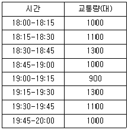
- 0.84
- 0.85
- 0.87
- 0.90
(정답률: 65%)
27. 국도의 제한속도를 설정하기 위하여 조사를 계획하고자 하며, 주행자동차 속도의 표준편차가 10km/h, 허용오차를 2km/h로 할 때 필요한 표본수는? (단, 통계의 신뢰도는 95%이며 이때의 통계신뢰도 계수는 2이다.)
- 100대
- 150대
- 200대
- 400대
(정답률: 알수없음)
28. 손실시간의 총량은 용량에 영향을 준다. 이와 같은 논리에서 신호주기가 길어졌을 때의 설명으로 틀린 것은?
- 신호주기가 길어져 녹색시간이 길면 차두시간이 길어져 용량증대효과는 상쇄되기도 한다.
- 신호주기의 길이는 차량의 평균정지지체시간에 영향을 주지 않는다.
- 지체는 많은 요인들에 영향을 받는 복합변수로, 주기의 길이는 이들 요인 중 하나에 불과하다.
- 좌회전신호와 좌회전 전용차로가 있는 전용좌회전 교차로에서 주기가 길어지면, 좌회전 대기행렬이 좌회전 포켙의 용량을 초과하게 되어 직진차선을 침범하게 되어 용량이 감소한다.
(정답률: 55%)
29. 다음 중 보행자 횡단시간의 결정요소가 아닌 것은?
- 자동차의 교통량
- 교차로의 폭원
- 횡단 보행자수
- 보행자의 속도
(정답률: 59%)
30. 다음 곡선부의 최소반경을 구하는 공식이 알맞게 표현된 것은? (단, R : 곡선반경, V : 설계속도, f : 마찰계수, I : 편구배)
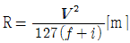
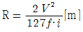
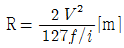
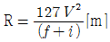
(정답률: 86%)
31. 도로상의 임의의 지점을 통과하는 차량의 대수, 보행자의 수 또는 교통사고 차량의 대수 등 교통류의 분포상태를 나타낼 때 자주 이용하는 확률분포는 무엇인가?
- 포아송분포
- 이항분포
- 음이항분포
- 음지수분포
(정답률: 알수없음)
32. 교통량이 13대/분, 차량의 평균공간 속도가 1.25km/분 일 때, 차량밀도는?
- 1.84 대/km
- 1.96 대/km
- 2.08 대/km
- 10.40 대/km
(정답률: 73%)
33. 다음 그림은 속도와 교통량의 관계를 나타내고 있다. 여기서 용량상태를 의미하는 속도는?
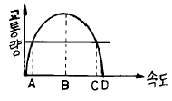
- A
- B
- C
- D
(정답률: 84%)
34. 신호교차로에서 딜레마 죤(Dilemma Zone)을 없애기 위한 현시간 황색시간을 산출하는데 고려되지 않는 사항은?
- 주기
- 감속도
- 접근속도
- 차량길이
(정답률: 59%)
35. 다음의 자동차 주행시간 조사방법 중에서 일정구간에 시험차량을 구간의 다른 차량과 균형을 유지하면서 운행하며 주행시간을 기록하는 방법에 해당하는 것은?
- 평균속도 운행법
- 주행차량 이용법
- 번호판 판독법
- 교통류 적응운행법
(정답률: 알수없음)
36. 경사, 노면상태, 차종 등이 속도에 미치는 영향을 찾아내어 속도규제나 단속 또는 사고분석에 이용하고자 할 때 사용되는 속도는?
- 공간평균속도
- 시간평균속도
- 운행속도
- 평균도로속도
(정답률: 55%)
37. 도로시설을 기능적으로 분류할때 다음 도로시설중 이동성이 가장 높은 도로는?
- 국지도로
- 집·분산도로
- 간선도로
- 고속도로
(정답률: 62%)
38. 고속도로 기본구간에서 이상적인 도로조건에 해당하지 않는 것은?
- 교통류는 승용차로만 구성
- 차로폭이 3.5m 이상
- 측방장애물까지의 거리가 포장단에서 1m 이상
- 평지
(정답률: 84%)
39. 속도 누적분포곡선에서 교통규제상의 최대 속도는 몇 % 일 때의 속도를 취하는 것이 통례인가?
- 100%
- 85%
- 50%
- 25%
(정답률: 85%)
40. 차량의 평균속도가 40km/hr, 차두평균간격이 20m 일 경우 도로의 평균교통량은 얼마인가?
- 200대/시간
- 500대/시간
- 800대/시간
- 2,000대/시간
(정답률: 46%)
3과목: 교통시설
41. 설계속도가 80 km/h인 왕복 2차로 도로의 편구배 접속설치율은 1/150이다. 도로중심선의 표고가 일정하다고 가정하고, 도로중심선을 중심으로 편경사(편구배)를 적용할 때, 도로중심선에서 4m 떨어진 길어깨의 표고가 30cm 변하는데 필요한 접속설치길이는?
- 45 m
- 40 m
- 35 m
- 30 m
(정답률: 알수없음)
42. 지방지역의 집산도로로 평지인 경우 설계속도의 표준은?
- 50㎞/h
- 60㎞/h
- 70㎞/h
- 80㎞/h
(정답률: 50%)
43. 도시지역의 고속도로 및 일반도로의 중앙분리대 설치시 최소폭은?
- 도시고속도로 1.5m, 일반도로 1.0m
- 도시고속도로 2.0m, 일반도로 1.0m
- 도시고속도로 2.5m, 일반도로 2.0m
- 도시고속도로 3.0m, 일반도로 2.0m
(정답률: 72%)
44. 설계속도가 100km/h인 지방지역 고속도로의 차도우측에 설치하는 길어깨(갓길)의 최소폭은?
- 1.25m
- 1.75m
- 2.00m
- 3.00m
(정답률: 67%)
45. 다음 ( )안에 알맞은 말은?
- 작다
- 크다
- 같다
- 일률적으로 말할 수 없다.
(정답률: 알수없음)
46. 속도 50km/h의 A차량과 속도 45km/h의 B차량이 아래 그림과 같이 교차할 때 B차량에 대한 A차량의 상대속도는?
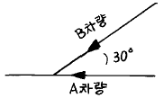
- 5.0km/h
- 8.0km/h
- 11.0km/h
- 14.0km/h
(정답률: 59%)
47. 설계속도가 120 km/h인 평지도로에서 노면과 타이어의 종방향 마찰계수가 0.28이라면 그 지역의 정지시거는?
- 110
- 125
- 200
- 285
(정답률: 알수없음)
48. 다음 그림과 같은 종단곡선이 있다. 이 종단곡선의 시점(VPC)로부터 20m 지점에서의 표고를 구하면?
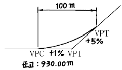
- 930.25m
- 930.28m
- 930.31m
- 930.33m
(정답률: 42%)
49. 휴게시설의 배치시 휴게소 상호간의 표준은 얼마정도 떨어지는 것이 바람직한가?
- 30km
- 50km
- 100km
- 120km
(정답률: 84%)
50. 도로와 철도가 평면 교차하는 경우 교차각 읨는 최소 얼마 이상 이어야 하는가?
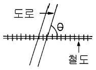
- 30° 이상
- 45° 이상
- 60° 이상
- 75° 이상
(정답률: 59%)
51. 다음 포장두께 설계법 중 우리나라에서 가장 많이 쓰이는 설계법은?
- AASHTO 설계법
- PCA 설계법
- AI 설계법
- TA 설계법
(정답률: 62%)
52. 신호가 없는 교차로에서 좌회전 차로의 길이를 구할 때 기준이 되는 것은?
- 1분간의 좌회전 교통량
- 2분간의 좌회전 교통량
- 3분간의 좌회전 교통량
- 5분간의 좌회전 교통량
(정답률: 86%)
53. 노외주차장의 설계에 관한 다음 설명 중 옳지않은 것은?
- 주차 차량을 한군데에 집합처리한다.
- 노상 주차장에 비해 비교적 교통사고가 많이 발생한다.
- 주차면의 수는 직각 주차 방식일 때가 가장 많이 확보된다.
- 주차장으로 진입하는 도로의 설계가 매우 중요하다.
(정답률: 40%)
54. 교차로의 좌회전 차로 길이의 결정에 영향을 주지 않는 것은?
- 좌회전 교통량
- 차량의 감속도
- 차량길이
- 차로폭
(정답률: 60%)
55. 시내 백화점의 주차특성을 조사한 결과 주차발생 원단위가 4.72(대1000m2/시),주차이용효율이 80.5%,신축후 주차대수의 연평균 증가율이 3%로 나타났다. 신축예정인 어느 백화점의 건물 연면적이 22,350m2일때 목표연도(5년후)의 주차수요를 원단위법으로 구하면 주차대수는?
- 76대
- 131대
- 142대
- 152대
(정답률: 50%)
56. 다음 교차로의 연결로 중 교통사고 발생률이 가장 높은 유형은?
- 다이아몬드형 유입연결로
- 트럼펫형의 유출연결로
- 좌측접속 유출연결로
- 집산도로가 없는 루프형 유입연결로
(정답률: 74%)
57. 다음은 중앙분리대의 효과를 설명한 것이다. 옳지 않은 것은?
- 유턴(U-Turn)시 많은 도움을 준다.
- 보행자 횡단시에 안전성을 높이는 역할을 할 수있다.
- 좌회전 차로의 설치에 큰 도움이 된다.
- 대향차로의 오인(誤認)을 방지한다.
(정답률: 72%)
58. 설계속도가 120kph일때의 완화곡선의 최소길이는?
- 80m
- 70m
- 67m
- 56m
(정답률: 70%)
59. 도시지역 도로의 편경사(편구배) 최대값으로 옳은 것은?
- 4%
- 6%
- 8%
- 10%
(정답률: 67%)
60. 도로 노선계획의 유의사항으로 잘못된 것은?
- 교차각은 될수록 직각에 가깝도록 한다.
- 엇갈림교차나 곡선부에서의 교차는 피한다.
- 종단곡선의 정상부나 맨 아랫부분에 교차로를 설치해야 한다.
- 기능이 현격히 다른 도로와의 교차는 가능한 한 줄인다.
(정답률: 85%)
4과목: 도시계획개론
61. 도시인구가 20만이고, 주거지역의 1인당 점유택지면적 40m2, 주택용지율 65%라 하면 전체 주거지역 면적은?
- 12.31 ㎞2
- 5.55 ㎞2
- 4.44 ㎞2
- 3.33 ㎞2
(정답률: 62%)
62. 도시지역이 무질서하게 확산되는 현상을 무엇이라 하는가?
- 슬럼(slum)
- 스프롤(sprawl)
- 의존효과(dependence effect)
- 스태그 플레이션(stagflation)
(정답률: 67%)
63. 토지 이용계획을 수립함에 있어서 정성적(定性的)인 예측변수가 아닌 것은?
- 토지의 생산성 및 산업별 생산액
- 생활양식의 변화추이
- 산업입지의 형태
- 기술 및 사회가치관의 변화
(정답률: 50%)
64. 현행 국토의 계획 및 이용에 관한 법률상의 용도지역의 구분에 해당되지 않는 것은?
- 전용주거지역
- 유통상업지역
- 준공업지역
- 개발제한지역
(정답률: 알수없음)
65. 도시계획시설로서 출입구가 2개이상 있는 곳의 주차형식별 주차장 차로 너비로 부적절한 것은?
- 평행주차 : 3.3m
- 직각주차 : 5m
- 60도 대향주차 : 4.5m
- 40도 대향주차 : 3.5m
(정답률: 17%)
66. 도시구성의 3대 물리적 요소란?
- 인구,토지,정책
- 교통,주택,산업
- 토지,인구,시설
- 밀도,배치,동선
(정답률: 50%)
67. 도시 재개발 계획을 수립하는데 거쳐야 할 가장 기본이 되는 선행 사항은?
- 종합적인 현장조사
- 주변지역과의 관계검토
- 도시기반시설이 갖추어져 있는지의 여부검토
- 도시전체의 개발계획검토
(정답률: 알수없음)
68. 다음 중 신도시 개발의 장점이라고 볼 수 있는 것은?
- 도시개발에서 경제성을 추구할 수 있다.
- 인간미가 있는 도시를 건설할 수 있다.
- 인구의 재배치를 효율적으로 달성할 수 있다.
- 도시적 분위기를 느끼게 하는데 용이하다.
(정답률: 알수없음)
69. 아디케스(Adickes)법에 의하여 토지구획정리 사업을 실시한 나라는?
- 프랑스
- 독일
- 오스트리아
- 스위스
(정답률: 67%)
70. 도시의 기능분리의 요인으로서 가장 거리가 먼 것은?
- 도심부의 지가가 지나치게 높다.
- 유사한 기능을 집중시킴으로서 집적의 이익에 유리하다.
- 도시활동의 중심은 교외와의 교통과 결부되는 경우가 있다.
- 도시의 기능분화는 교통 축을 따라 일정하게 형성된다.
(정답률: 알수없음)
71. C. A. Perry의 근린 주구에 대한 설명중 틀린 것은?
- 주구 개발은 대체로 초등학교 1개교가 필요한 정도의 인구에 대응하는 호수를 가질 것
- 주구 단위는 통과 교통이 통과하지 않고 우회 하도록 함
- Open Space는 각 주구의 요구에 따라 계획된 소공원과 레크레이션 공간을 가질 것
- 서비스 공간을 갖는 학교, 기타 공공시설 용지는 주구의 변두리에 위치함
(정답률: 67%)
72. 다음 중 지리정보시스템(GIS)에서 점(point)자료에 대한 공간분석의 내용으로 적당하지 않은 것은 어느 것인가?
- 공간적 질의(spatial query)
- 근린성 분석(proximal analysis)
- 네트워크 분석(network analysis)
- 지리적 처리(geocoding)
(정답률: 알수없음)
73. 주택지의 구획가로로서 통과교통을 배제하고 차의 주행속도를 낮추는데 유효한 도로는?
- 격자형도로
- U자형도로
- T자형도로
- X자형도로
(정답률: 47%)
74. 격자형 도로망의 단점이 아닌 것은?
- 통과교통이 생기기 쉽다.
- 시각적으로 단조로운 형태를 갖는다.
- 차량에 의한 접근이 용이하다.
- 차도와 보도가 교차한다.
(정답률: 55%)
75. 도시계획의 기법에서 곡선(曲線)을 강조한 사람은?
- 레이몬드 언윈(Raymand Unwin)
- 에베네즈 하워드(Ebenezer Howard)
- 르 고르비제(Le Corbusier)
- 고트후리드 훼더(Gottfried Feder)
(정답률: 42%)
76. 가로의 기능별 배치기준에서 도심부 간선도로의 배치간격으로 가장 적합한 것은?
- 500m
- 200m
- 5,000m
- 1,000m
(정답률: 알수없음)
77. 토지이용계획의 의미를 가장 잘 설명한 것은?
- 유럽형의 접근은 토지이용계획이 도시기본계획의 상위계획으로 정의된다.
- 미국형의 접근은 교통계획, 도시시설계획은 토지이용계획에 포함되는 것으로 구분된다.
- 광의로 해석할 경우 모든 도시시설계획이 토지이용계획과 대응된다.
- 토지공간의 평면 위에서 사람들이 영위하는 제반활동들을 예측하여 토지이용을 합리적으로 배치하는 계획작업이다.
(정답률: 55%)
78. 다음 도시유형들 중 모도시와의 종속적관계로 형성되어지는 도시형태는?
- 전원도시
- 위성도시
- 뉴타운
- 신도시
(정답률: 59%)
79. 도시하부구조는 다음 중 무엇을 말하는가?
- 도시생활 편익시설
- 도시의 공원.녹지시설
- 도시의 기반시설
- 주택등 도시생활에 필요한 기본시설
(정답률: 50%)
80. 용도지역제 중에서 필요한 경우 세분류를 1종, 2종, 3종으로 구분 지정할 수 있는 용도지역은?
- 전용주거지역
- 일반주거지역
- 중심상업지역
- 일반상업지역
(정답률: 47%)
5과목: 교통관계법규
81. 교통영향 평가업무에 근거가 되는 법률은?
- 도로교통법
- 환경, 교통, 재해 등에 관한 영향평가법
- 도시계획법
- 도로법
(정답률: 16%)
82. 도시교통 정비촉진법상 도시교통정비 기본계획의 수립시 포함되어야할 사항이 아닌 것은?
- 교통시설의 개선
- 대중교통체계의 개선
- 차량의 관리
- 환경친화적 교통체계의 구축
(정답률: 42%)
83. 다음중 교통영향평가 내용이 아닌 것은?
- 사업지 주변지역의 장래 교통수요예측
- 진출입동선에 대한 개선대책
- 대중교통에 관한 개선대책
- 사업시행에 대한 예비타당성 평가
(정답률: 42%)
84. 도로를 굴착하여 공작물을 신설하고자 하는 자는 그 점용에 관한 사업계획서를 매년 정해진 달에 제출하여야 하는데 이중 정해진 달이 아닌 것은?
- 3월
- 7월
- 10월
- 1월
(정답률: 알수없음)
85. 도로법에서 도로에 속하지 않는 것은?
- 가로수
- 터널
- 도로용 엘리베이터
- 도선장
(정답률: 알수없음)
86. 교통사고의 정의를 올바르게 기술한 것은?
- 차의 교통으로 인하여 물건을 손괴하는 것을 말한다.
- 자동차의 운행으로 인해 사람만을 사상한 것을 말한다.
- 차의 교통으로 인하여 사람을 사상하거나 물건을 손괴하는 것을 말한다.
- 자전거의 통행으로 인하여 보행자를 다치게 한 행위를 말한다.
(정답률: 54%)
87. "도시교통정비지역"은 상주인구가 몇 명이상인 지역을 말하는가?
- 30만명
- 10만명
- 5만명
- 1만명
(정답률: 60%)
88. 노면표지 중 중앙선은 노폭 몇 m이상인 도로에 표시 하는가?
- 8m
- 7m
- 6m
- 5m
(정답률: 알수없음)
89. 중앙도시교통정책심의위원회는 위원장 1인과 부위원장 1인을 포함하여 몇 명 이내의 위원으로 구성되는가?
- 12인
- 30인
- 36인
- 48인
(정답률: 60%)
90. 다음 중 서행할 장소로 올바르지 않은 것은?
- 교통정리가 행하여지고 있지 아니하는 교차로
- 도로가 구부러진 부근
- 비탈길의 고개마루 부근
- 가파른 비탈길의 오르막
(정답률: 알수없음)
91. 노외 또는 부설 주차장에서 직각주차의 차로폭은 얼마인가?
- 4.0m
- 5.0m
- 6.0m
- 7.0m
(정답률: 20%)
92. 도로에 관한 비용과 수익에 관련된 원칙이 아닌 것은?
- 비용부담의 원칙
- 원인자 부담금
- 손궤자 부담금
- 형평성의 원칙
(정답률: 알수없음)
93. 다음중 편구배의 크기와 직접적인 관련이 없는 사항은?
- 설계속도
- 곡선반경
- 도로의 폭
- 적설한냉의 정도
(정답률: 알수없음)
94. 교통안전기본계획의 수립, 실시에 관한 내용으로 옳은 것은?
- 정부는 교통안전기본계획을 10년마다 수립 실시해야 한다.
- 교통안전기본계획은 교통안전정책심의위원회의 심의를 거쳐 이를 공고하여야 한다.
- 지정행정기관의 장은 소관별 기본계획안을 매년 12월말까지 정책위원회에 제출하여야 한다.
- 국무총리는 매년 5월말까지 교통안전기본계획을 작성한다.
(정답률: 50%)
95. 도로교통법에서 정의하는 자동차에 해당하지 않는 것은?
- 승용자동차
- 승합자동차
- 화물자동차
- 자전거
(정답률: 70%)
96. 다음 주차장 특별회계 설치 재원에 관한 설명중 옳지 않은 것은?
- 노외주차장 설치를 위한 비용의 납부금
- 당해 지방자치단체의 일반회계로부터의 전입금
- 정부의 보조금
- 주차위반 범칙금
(정답률: 39%)
97. 다음 중 교차로 통행방법 중 틀린 것은?
- 모든 차는 교차로에서 우회전하려는 때에는 미리 도로의 우측가장자리를 따라 서행하여야 한다.
- 우선순위가 같은 차가 동시에 교차로에 들어가려고 하는 때에는 좌측도로의 차에 진로를 양보하여야 한다.
- 교통정리가 행하여지고 있지 아니하는 교차로에 들어가려는 모든 차는 그 차가 통행하고 있는 도로의 폭보다 교차하는 도로의 폭이 넓은 경우에는 서행하여야 한다.
- 모든 차는 교차로에서 좌회전하려는 때에는 미리 도로의 중앙선을 따라 교차로의 중심안쪽을 서행하여야 한다.
(정답률: 20%)
98. 도로의 구분에 있어서 도시지역과 지방지역을 구체적으로 구분할때 사용하는 지표는 인구의 규모로서 도시지역은 몇 명이상 거주하는 지역을 대상으로 하는가?
- 3000명
- 5000명
- 7000명
- 10000명
(정답률: 50%)
99. 부설주차장을 설치할 수 있는 부지 인근의 범위가 옳은 것은? (직선거리의 경우)
- 300m
- 400m
- 200m
- 100m
(정답률: 55%)
100. 도시관리계획결정의 효력이 발생하는 시기는?
- 도시관리계획의 고시가 있은 날
- 도시관리계획의 고시가 있은 날부터 3일후
- 도시관리계획의 고시가 있은 날부터 5일후
- 도시관리계획의 고시가 있은 날부터 7일후
(정답률: 알수없음)
6과목: 교통안전
101. 일반적인 교차로의 교통사고 특성에 대한 설명중 옳은 것은?
- 4지교차보다 3지교차가 사고율이 높다.
- 교통량이 많을수록 사고율이 높다.
- 무신호 교차로에서는 신호교차로보다 정면충돌 사고의 위험성이 높다.
- 보호좌회전이 비보호좌회전보다 사고율이 높다.
(정답률: 50%)
102. 교통사고 분석요령은 효과적인 방지대책을 수립하기 위해서 필요한 과학적이며 실증적인 분석을 하는데 있다. 분석방법을 크게 통계적방법과 사례적방법으로 분류할 때 다음 중 통계적분석방법이 아닌 것은?
- 조직별분석
- 교통환경분석
- 노선별분석
- 차종별분석
(정답률: 알수없음)
103. 위험도 선정을 위해 사용되는 분석방법 중 미국의 교통연구원에서 발간한 교통사고 분석체계에 기술된 합리적인 방법으로 각지점의 사고율을 산정하고 그 지점의 사고율이 유사한 조건을 갖는 도로에 대한 사고율보다 현저히 높은지의 여부를 검토하기 위한 절차에 근거한 것이며 사고발생 확률이 poisson 분포에 따른다는데서 출발하는 분석방법은?
- 교통사고 건수에 의한 방법
- 통계적 교통사고율 분석방법
- 교통사고 현황판에 의한 방법
- 교통사고 피해정도에 의한 방법
(정답률: 55%)
104. 다음 중 노변 방호책의 세가지 기능적 구성요소에 속하지 않는 것은?
- 표준구간
- 전이구간
- 레일구간
- 끝부분
(정답률: 50%)
1⑤. 교통안전 정책의 추진방향 중 공학분야의 대책과 관련이 없는 것은?
- 차량안전도 향상
- 교통안전시설의 정비
- 사고조사 및 분석개선
- 운수업체 안전관리개선
(정답률: 82%)
106. 옆미끄럼 마찰계수가 0.7이고 곡률반경(곡선반경)이 300m인 젖은 곡선로에서 자동차가 옆으로 미끄러지지 않고 선회할 수 있는 이론적인 한계 선회속도를 구하면?
- 163km/h
- 168km/h
- 173km/h
- 178km/h
(정답률: 50%)
107. 개선사업 시행전 3년간의 연평균 사고건수가 10건이며, 연평균 ADT가 6,000대인 한 교차로에 사고감소율 20%인 교통안전 사업을 시행한 후 3년 동안에 예측되는 연평균 사고감소 건수는? (단, 이 교차로의 사업시행후 3년 동안의 연평균 ADT는 7,000대로 예측된다.)
- 4.6건
- 2.3건
- 1.2건
- 5.9건
(정답률: 40%)
108. 교통사고 분석방법 중에서 통계적 분석내용에 포함되지 않는 것은?
- 차종별 분석
- 노선별 분석
- 운전자별 분석
- 조직별 분석
(정답률: 알수없음)
109. 브레이크 과열로 말미암아 브레이크 오일에 기포가 생기고 이것이 브레이크의 압력을 흡수하기 때문에 브레이크가 제기능을 발휘하지 못하게 되는 현상을 무엇이라고 하는가?
- 패도 현상
- 베이퍼록 현상
- 브레이크 드럼에의 침순현상
- 파워핸들의 고장현상
(정답률: 82%)
110. 위험지점의 개선으로 부터 기대되는 2차 편익으로 보기 어려운 것은?
- 차량혼잡감소
- 물피사고감소
- 개선된 가로 조명으로 인한 가로범죄의 감소
- 사고처리에 요하는 인력의 타부문 활용
(정답률: 알수없음)
111. 노변방호책은 그 동적처짐의 종류에 따라 연성, 반강성 및 강성으로 구분할 수 있는데, 이중 연성 방호책은 어떻게 구성하는 것인가?
- 약한 지주와 약한 레일
- 약한 지주와 강한 레일
- 강한 지주와 강한 레일
- 강한 지주와 약한 레일
(정답률: 82%)
112. 다음 중 교차로 사고분석에 주로 사용되는 교통사고율은?
- 차량 10,000대당 사고
- 진입차량 100만대당 사고
- 인구 10만명당 사고
- 통행량 1억대.km당 사고
(정답률: 55%)
113. 어느 한 지역의 일평균 교통량이 10,000대이고 도로구간이 12km이며 이와 유사한 도로의 평균사고율이 1년에 3.5건이라면 95%의 유의수준으로 한계교통사고율(백만차량·km)은? (단, 95%의 유의수준일 때 k=1.645)
- 3.58
- 3.98
- 4.38
- 4.88
(정답률: 55%)
114. 비가 오는 날은 수막 현상에 의한 교통사고가 많이 발생한다. 다음 중 수막현상을 증대시키는 요인이 아닌 것은?
- 두꺼운 수막층의 깊이
- 빠른 주행 속도
- 깊은 타이어의 홈
- 무거운 축하중
(정답률: 59%)
115. 다음 중 도로교통을 구성하는 3요소가 아닌 것은?
- 사람
- 도로
- 자동차
- 자본
(정답률: 80%)
116. 교통사고 조사시 교통사고 현장의 도로상에서 조사하는 사항이 아닌 것은 어느 것인가?
- 차량 및 인체의 최종 정지 위치
- 스키드마크(Skidmark)
- 노상 산란물
- 직접 접촉 파손(Contact damage)
(정답률: 67%)
117. 노변방호책의 일반적인 높이는?
- 0.3∼0.4m
- 0.5∼0.6m
- 0.7∼0.8m
- 0.9∼1.0m
(정답률: 64%)
118. 한 차량이 50m 거리를 미끄러져 주차한 차량과 충돌하였으며 충돌 후 두 차량이 18m 미끄러져 정지하였다. 양 차량의 무게가 동일할 때 주행차량의 초기 속도는? (단, 마찰계수는 0.6임.)
- 145.8km/h
- 136.4km/h
- 123.9km/h
- 118.2km/h
(정답률: 47%)
119. 교통사고요인 중 도로구조요인에 해당하지 않는 것은?
- 도로의 선형
- 도로의 안전시설
- 도로의 노면상태
- 도로의 노폭
(정답률: 알수없음)
120. 방호책의 효과에 관련된 설명으로 옳지 않은 것은?
- 주행차량의 도로이탈을 방지한다.
- 도로이탈차량의 진행방향을 복원시킨다.
- 운전자의 시선을 유도한다.
- 횡단하는 보행자를 보호한다.
(정답률: 34%)